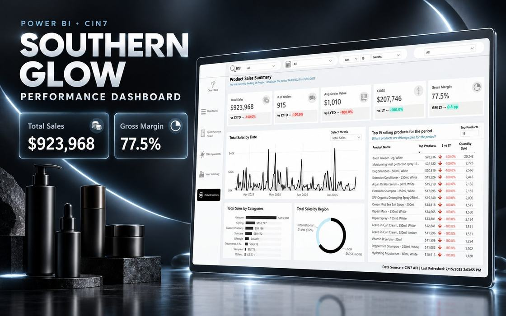
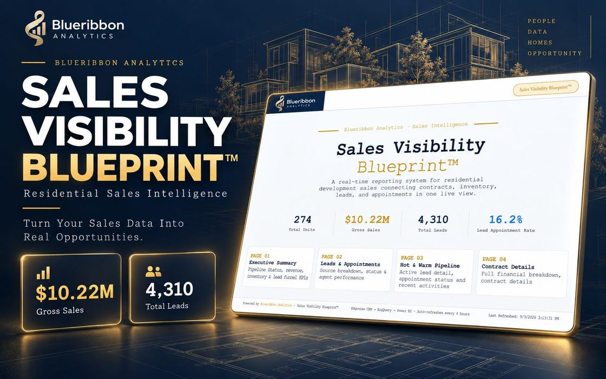
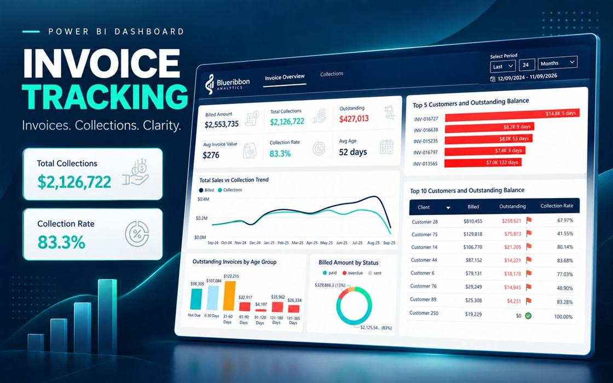
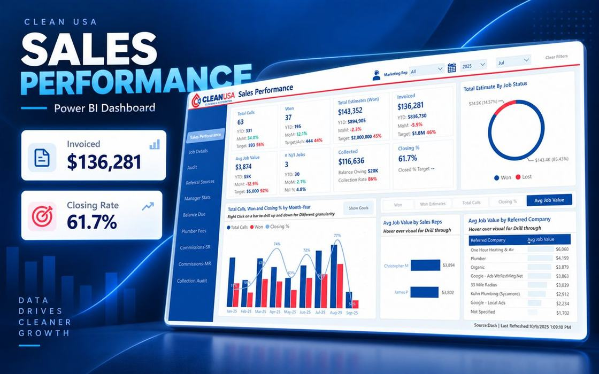
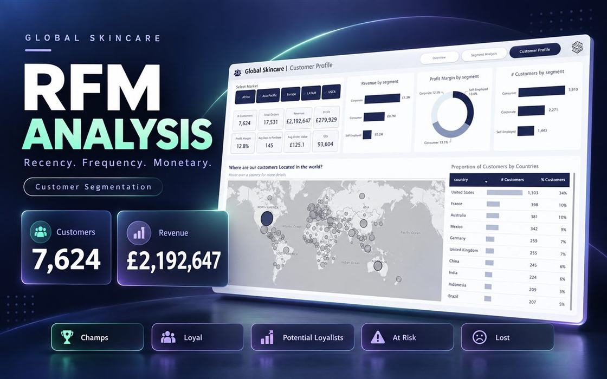

01
Simple questions shouldn’t take hours to answer.
Can you afford another hire? Are margins improving? Is cash keeping up with sales? Each system shows part of the picture, leaving you without a clear answer.
For Owner-Led businessesFreelance Power BI consultant
I bring together data from the tools your business already uses. Then I build a Power BI reporting system around the questions you need answered, so you can see what’s happening and make decisions with confidence.
Revenue vs. cost Monthly
Margin by service line Target 22%
Your business runs on different systems. But when it’s time to make a decision, you’re left piecing the numbers together.
Can you afford another hire? Are margins improving? Is cash keeping up with sales? Each system shows part of the picture, leaving you without a clear answer.
Sales reports one revenue figure. Finance reports another. Before you can decide what to do, you have to work out which number to trust.
Exporting reports, combining spreadsheets and chasing updates keep pulling you away from customers, your team and growing the business.
Sales are coming in and your team is busy. But are margins improving? Is cash keeping up? Which parts of the business need attention? The answers sit across different reports.
You want to ask questions about your business and get useful answers. But when your systems hold incomplete data or conflicting figures, you still have to check every response. You need trusted, consistent numbers underneath before you can confidently act on what AI tells you.
By the time the reports come together, costs have climbed, payments are overdue or performance has slipped. You need a clearer view while there’s still time to act.
Client results
Different industries, same principle: start with the management question, connect the right data, then build reporting that shows what is happening, where to look, and why it is happening.

The team spent hours each day pulling inventory reports. I connected Power BI to the inventory platform’s API, replacing those manual pulls with hourly updates. They now have that time back to review stock, plan reorders and make inventory decisions.
View live report
Pipeline, lead sources and closing performance were reported separately. I brought them into one sales view so management could spend less time piecing together the funnel and more time identifying stalled opportunities, assessing lead sources and deciding where the sales team should focus.
View live report
A cardiac clinic in Panama repeatedly checked its accounting software to identify unpaid invoices. I built a connected view of outstanding balances and aging, reducing the work needed to establish who owed what. The team can focus on following up overdue payments rather than preparing the list.
View live report
Every Monday, someone had to export data from DASH and piece together reports in Excel. The work was tedious and inconsistent, with limited visibility into how performance compared with previous weeks or the same period last year.
I built a scheduled email pipeline to bring DASH data into Power BI, then created a performance dashboard with historical comparisons, team commission calculations and checks that flag missing inputs for correction.
Management now spends less time preparing reports and more time using them to run the business, with a clear view of performance, commissions and data issues that need attention.
View live report
The brand could see sales totals but couldn’t clearly distinguish customer buying patterns. I built segments based on purchase recency, frequency and value, removing the need to work through sales records to identify customer groups. The team can focus on which customers to retain, reactivate or develop, with a clear basis for targeting each group.
View live reportFigures in the live reports are randomized for client privacy.
Connect your data, build reporting you can trust, and keep it useful as your business grows.
Get reporting built around the questions you need answered, with figures checked against your source systems. See what’s happening in your business and make decisions with confidence.
Bring data from the tools your business already uses together in a trusted data layer. Reduce manual exports and create a consistent foundation for reporting and AI tools to work from.
Keep your reporting running and relevant after launch. I monitor refreshes, resolve issues and help your reporting evolve as your business and priorities change.
From disconnected data to reporting you can use with confidence, with clear checkpoints along the way.
Indicative 30-day timeline
We discuss what you need to know, review your current reporting and identify where the data lives. You get a clear scope, agreed priorities and a plan for the build.
I connect the relevant systems, clean and organise the data, and set up scheduled updates. This creates a consistent foundation for your reporting.
We agree on how your key metrics are calculated. You review the layout before I build, then we refine the reports together using your actual data.
I validate the figures against your source systems, set up access and walk your team through the reports. You receive documentation so you understand what’s included and how it works.
I monitor refreshes, resolve issues and make improvements so your reporting stays accurate, useful and relevant. As your priorities change, I help you track what matters, investigate changes in performance and get more value from the system. You have someone who knows your data and reporting, ready to help when questions come up.
A fixed price for the build. Optional monthly management after launch.
Meet Royce
For eleven years, I was the person people waited on for the insights. My career took me from microfinance in Cameroon to furniture retail, healthcare and health insurance in Bahrain. Every company was different, but the pattern kept repeating: the data existed, decisions were waiting on it, and somebody had to pull it together. Usually, that somebody was me.
I know what it’s like to be responsible for an answer when the numbers are spread across different systems. To check the figures before presenting them to management. To explain what changed, why it matters and what needs attention.
When I started working with clients through Blueribbon Analytics, their problems felt familiar, even in industries I’d never worked in. A distributor planning reorders in spreadsheets. A joint venture trying to split costs fairly. A business owner trying to understand whether growth was translating into profit.
Today, I bring that finance and operations experience to every reporting system I build. It helps me ask better questions, spot gaps and understand what the numbers need to tell you. You work directly with me, from understanding the problem to getting reporting you can use with confidence.
Experience working with the numbers businesses rely on to make decisions.
Reporting built around what you need to understand and act on.
Figures validated against your systems before your reports go live.
One person who understands your business, from first call through launch.
Practical lessons from retail, healthcare, field services, hospitality and more.
Microsoft Certified Power BI Data Analyst, FMVA Certified and Top Rated on Fiverr.
Questions
What to expect before, during and after working together.
If your business uses several systems and getting a clear picture means combining reports, checking spreadsheets or chasing updates, I can help. I work with owners and business leaders who need reporting they can trust to manage performance and make decisions.
In many cases, yes. I connect data from accounting software, CRMs, operations platforms, spreadsheets and other business tools. During discovery, I check how your data can be accessed and explain any limitations before we commit to the build.
You don’t necessarily need to start again. I can review your existing setup to understand what works, what’s missing and why the reporting isn’t meeting your needs. That could mean improving the reports, fixing the underlying data or rebuilding parts of the system.
No. Cleaning and organising data is often part of the work. I’ll identify gaps, inconsistent records and other issues that affect reporting. Where something needs correcting in your day-to-day processes, I’ll explain what needs to change and why.
The core reporting system is typically built in 30 days. Timing depends on the scope, access to your systems and how quickly we can review things together. We agree on the timeline before the build starts.
Someone who understands the business, access to the relevant data and time for feedback at key checkpoints. You bring the context behind the numbers. I handle the connections, data preparation and reporting build.
Projects start at $2,500, with a fixed price based on your data sources and reporting needs. Payments are split into milestones: 40% to begin, 40% after the core system is built and demonstrated, and 20% at launch. Ongoing management is priced separately.
There may be Power BI licences and cloud hosting costs, depending on your setup. I explain what’s needed and the expected running costs in the proposal, so you can assess the full investment before proceeding.
I check the report figures against your source systems and review key calculations with you. We agree on what each metric means and investigate differences before launch, so you understand what the reports show and can trust how the numbers are calculated.
No technical background is needed for everyday use. I build around how your team needs to view the business, then walk them through filtering, exploring the numbers and finding answers. Documentation is included for future reference.
Your business owns the reporting system and its data. Wherever practical, I build within accounts you control, with access limited to what’s needed for the work. We agree on access and security arrangements before starting, and I can sign an NDA.
You can choose ongoing management so I continue monitoring refreshes, resolving issues and improving the reporting as your business changes. If your team will manage it internally, I provide the documentation and handover needed to take it forward.
Next step
In a 30-minute call, we’ll look at how you report today, which questions are difficult to answer and what a connected reporting system could do for your business. I’ll tell you honestly whether I can help and what I’d recommend tackling first.
Book a 30-minute callNo preparation needed. Just bring the reporting questions you’re tired of working around.
Have a question?
Tell me what’s making reporting difficult, which tools you use or what you’re trying to understand about your business. You don’t need a detailed brief or technical answers. I’ll read your message personally and get back to you with a practical next step.